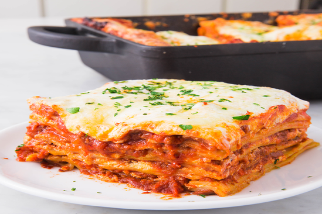

Lasagna Bolognese
A lasagna is only as good as its bolognese. So this lasagna is AMAZING!

Recipe: lasagna bolognese
This isn't a quick and easy lasagna. This is a slow and divine lasagna. A memorable lasagna.
Let's list now every ingredient you'r going to need and also an easy step-by-step instructions:
Ingredients
For the bolognese:
- 2 tbsp. extra-virgin olive oil
- 1 large onion (chopped)
- 1 large carrot (peeled and finely chopped)
- 2 stalks celery (finely chopped)
- 3 cloves garlic (minced)
- 2 lb. ground beef
- 1/2 c. dry white wine
- 2 (28-oz.) cans crushed tomatoes
- 1/4 c. tomato paste
- 1 c. low-sodium beef
- 1 bay leaf
- 1 c. whole milk
- Kosher salt
- Freshly ground black pepper
For the lasagna:
- 1 lb. lasagna noodles
- 3 c. ricotta
- 1 large egg
- 1 c. freshly grated parmesan
- 1 1/2 tsp. dried oregano
- /4 tsp. crushed red pepper
- Kosher salt
- Black pepper
- 1 lb. mozzarella
Instructions
- In a large dutch oven over medium-high heat, heat oil. Add onion, carrot, and celery, and cook until soft, 5 minutes. Add garlic and cook until fragrant, 1 minute more. Stir in beef breaking up meat with back of a spoon. Cook until no longer pink, about 8 minutes.
- Add wine, and bring mixture to a simmer. Cook until wine is mostly reduced. Stir in tomatoes, tomato paste, stock, and bay leaf, then reduce heat and simmer for 1 hour, allowing flavors to meld.
- Discard bay leaf, then gradually stir in milk. Let simmer, stirring occasionally, until milk is fully incorporated, about 45 minutes. Season with salt and pepper.
- Assemble lasagna: Preheat oven to 375°. In a large pot of boiling salted water, cook pasta according to package directions. Drain.
- In a medium bowl, combine ricotta, egg, ¾ cup Parmesan, oregano, and red pepper flakes. Season with salt and pepper.
- Add a thin layer of bolognese to the bottom of a 9”-x-13” baking dish. Add a layer of noodles then top with ricotta mixture and sauce, then repeat layers. Top last layer of noodles with bolognese, mozzarella, and remaining ¼ cup Parmesan.
- Cover with foil and bake for 40 minutes, then remove foil and bake 20 minutes or until cheese is melty and sauce is bubbling.
- Garnish with parsley before serving.

If you followed all the instructions corretly, it should now look as tasty as the above!
Also, check out my other 2 favourite recipes:
Home page